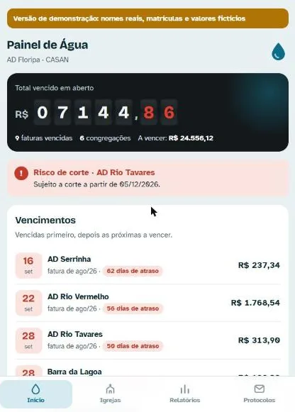

Problema real, uso diário
Painel de Água
Cuido das faturas de água de 61 congregações. Antes, era entrar no portal da CASAN unidade por unidade, comparar consumos e caçar respostas no e-mail.
20h4hpor mês
- React
- Vite
- Context API
- Gráficos em SVG
- GitHub Actions
- IA (Claude)
- Baixo as faturas pendentes em uma pasta do Google Drive.
- O Claude lê os PDFs e lança só o que está impresso. Se faltar dado, ele pergunta.
- O painel aponta vencidas, consumo acima da média e custo por m³.
- Uma tarefa agendada lê o Gmail e atualiza os protocolos com as respostas da CASAN.
